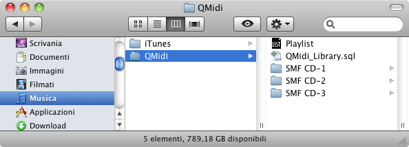

Si vous projetez d'utiliser la bibliothèque ou la liste de lecture de QMidi pour organiser vos fichiers media, suivez ces quelques règles pour éviter l'erreur "fichier manquant" lorsque vous transférez vos fichiers sur un autre ordinateur ou un autre disque. Il est très important de conserver la position relative entre fichiers media et bibliothèque/liste de lecture pendant le déplacement ou la copie, car la bibliothèque et la liste de lecture contiennent des "alias" vers ces fichiers.
Voici la procédure recommandée pour créer une liste de lecture:
La base de données de la bibliothèque est sauvegardée dans le répertoire "(Départ)/Musique/QMidi" et doit y rester pour que QMidi puisse y accéder. En conséquence, ce répertoire peut être utilisé comme un dossier racine qui vous permettra de déplacer sans difficulté vos fichiers d'un ordinateur à un autre ou d'un compte utilisateur à un autre.

La bibliothèque peut également pointer vers des fichiers situés à d'autres endroits (comme par exemple le dossier iTunes ou le dossier Vidéos). Il n'est pas nécessaire de les déplacer dans le dossier de QMidi. Cela dit, il est important de garder en tête que vous devrez transférer tous vos fichiers sans modifier la position relative des différents éléments. Si tous vos fichiers media sont situés dans votre dossier de départ, vous pourrez sans difficulté utiliser l'Assistant migration d'Apple pour transférer vos données d'un ordinateur à un autre.
Comme cela a été expliqué dans le chapitre "Placement des media", vous pouvez sans autre ajouter vos media iTunes à votre bibliothèque/liste de lecture. Cela dit, la fonction "Laisser iTunes organiser le dossier iTunes Media" peut causer quelques problèmes:
Lorsque vous modifiez soit l'artiste, l'album ou les tags de la piste ou du disque, iTunes va déplacer/renommer seulement le fichier media et laisser les fichiers QMidi synchronisés à leur place d'origine et avec leur nom d'origine. QMidi fait de son mieux pour informer l'utilisateur de ce genre de situation, mais il est préférable de désactiver cette fonction d'iTunes.
Vous pouvez importer des listes de lecture ou des sélections d'iTunes en les faisant glisser depuis la barre latérale de la fenêtre bibliothèque.
Si vous avez suivi les indications du chapitre "Placement des media", votre arborescence de fichiers devrait ressembler à ceci:

Avant de déplacer ou de copier le dossier racine de QMIDI, vous devriez rafraîchir toutes les listes de lecture qu'il contient. Cela peut se faire en maintenant la touche option appuyée tout en ouvrant la ou les liste(s) de lecture. Cette manipulation est semblable à la fonction "Consolider la bibliothèque" d'iTunes.
Après cela vous pourrez copier sans difficulté tout le dossier "QMIDI" sur un autre ordinateur ou un autre disque, sans perdre les références relatives des listes de lecture. Une fois l'opération effectuée, vous devrez rafraîchir les listes de lecture copiées.
NB: QMidi sauvegarde les informations de synchronisation dans le fichier texte resource fork. Vous ne pouvez donc les conserver seulement sur des volumes formatés au format HFS (Mac).
La même logique est utilisée ici: avant et après une opération de transfert, vous devrez rafraîchir les références de la bibliothèque, en gardant la touche option appuyée tout en démarrant QMidi.
Le placement de la bibliothèque de QMidi est codée en dur. Il n'est donc pas facile de partager une bibliothèque entre les différents comptes utilisateur de votre ordinateur.
Cela dit, il existe une astuce (pour utilisateurs avancés):
Comme il a déjà été dit, si votre bibliothèque pointe vers des fichiers media hors du dossier bibliothèque de QMIDI, vous devez conserver les positions relatives durant le transfert sur un autre ordinateur. Bon courage!